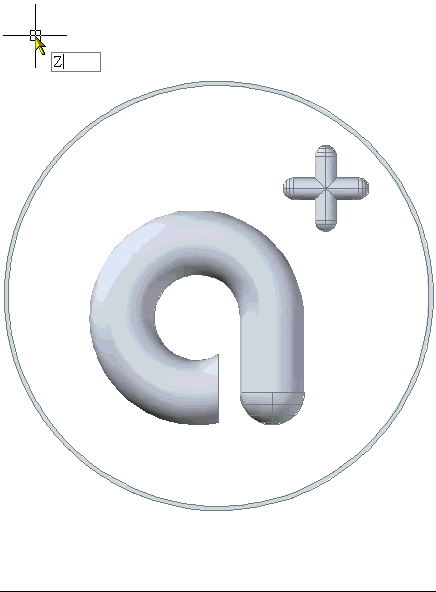

cad 2006 縮放功能，似乎有加了「動態」，
該怎麼取消它的動態功能，我祇要像之前一樣就好了。不知道要在那裡設定。
此技術為 AutoCAD 2006 的平滑視圖轉移特效。
可以在平移和縮放、變更視圖角度使用平滑視圖轉移特效。
請按照以下方式來關閉平滑視圖轉移特效。有問題請再提~
※※※ AutoCAD 2006 以上版本 ※※※
1.請輸入 VTOPTIONS 指令 螢幕上將顯示「視圖轉移」對話方塊。
2.將 □平移與縮放時啟用動畫 ....打勾取消即可。
PS:也可以直接將 VTENABLE系統變數 設定為0及可關閉
※動態操作步驟如下:有問題請再提※
